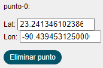
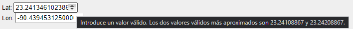

Este manual describe la funcionalidad, navegación y contenido del sitio web, para la descarga de series de datos que forman parte de la climatología del Atlas Meteorológico del Golfo de México para plantear escenarios de derrame. El usuario puede consultarlo para familiarizarse con el sitio, así como hallar información detallada de interés. El contenido del sitio web que se describe a continuación forma parte del subproyecto 3.3 (Modelación numérica regional de la atmósfera sobre el Golfo de México) de la Línea 3 de tal proyecto.
El acceso a la página tiene su panel en el sitio https://pronosticos.atmosfera.unam.mx/atlasmeteorologico.gom/

mapa
Este mapa tiene la opción de acercar o alejar la imagen a través de un control ubicado en la esquina superior izquierda 

popup punto
 y aparece el siguiente menú:
y aparece el siguiente menú:
Punto Seleccionado
En la parte superior de este menú, se despliega un campo editable con la coordenada. Si la coordenada elegida no es la deseada, en el campo editable se pueden modificar los valores de latitud y longitud, ya sea directamente de manera manual o haciendo click en las flechas que indican hacia arriba o abajo, 
En ese caso, se despliega un recuadro indicando la siguiente leyenda: Introduce un valor válido. Los dos valores válidos más aproximados son: num y num. Es posible tomar esos valores o unos que se ajusten más a las necesidades requeridas
Debajo se muestra la lista de estadísticos disponibles para las variables de Temperatura, Viento y Precipitación.

selección de parámetros
y se presiona el botón  para que se muestre una gráfica que muestre tales parámetros como se muestra a continuación,
para que se muestre una gráfica que muestre tales parámetros como se muestra a continuación,
Gráfica de series de tiempo
De igual manera, al posicionarse en algún punto de la gráfica, automáticamente se pueden visualizar los datos relacionados a ese punto en específico,

Leyenda y valores
Se debe tener en cuenta que al modificar manualmente algún punto (la coordenada) se debe presionar el botón de Desplegar de nuevo para que la gráfica se actualice.

Archivo CSV
Ejemplo 3 puntos
Al deplegar la gráfica, en este caso se han seleccionado todos los Promedios diarios de las tres variables, se obtienen nueve curvas como se muestra a continuación,

Ejemplo graficación
Las series de datos seleccionadas se pueden descargar con el botón Generar CSV. Los nombres de los archivos descargados contarán con el prefijo: AMGM_series_, seguido por la palabra diarios o mensuales.csv. Dependiendo de las características de la variable deseada, es donde se ubicarán los datos dentro de los archivos csv.

Ejemplo CSV
En caso de que no se deseen los datos en formato CSV, cada gráfica tiene la opción para mostrar los datos graficados, en un menú ubicado en la esquina superior derecha,

boton dataview
Al hacer click en Data View, se despliegan los datos con un formato plano que es posible copiar directamente a cualquier editor de textos,

dataview

con esta opción se obtiene un archivo denominado automáticamente ‘Climatología 1979-2018’ y tiene formato de imagen PNG.